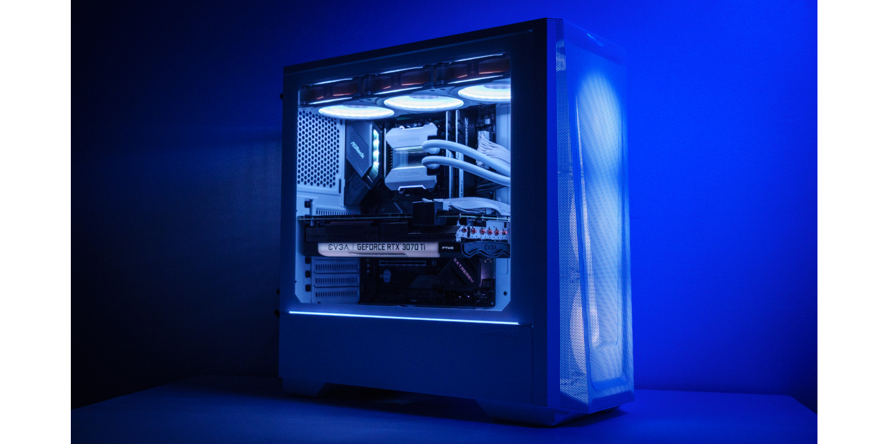
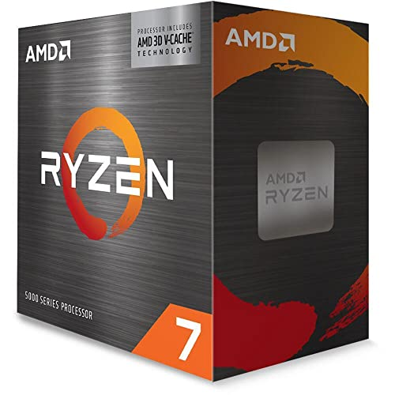
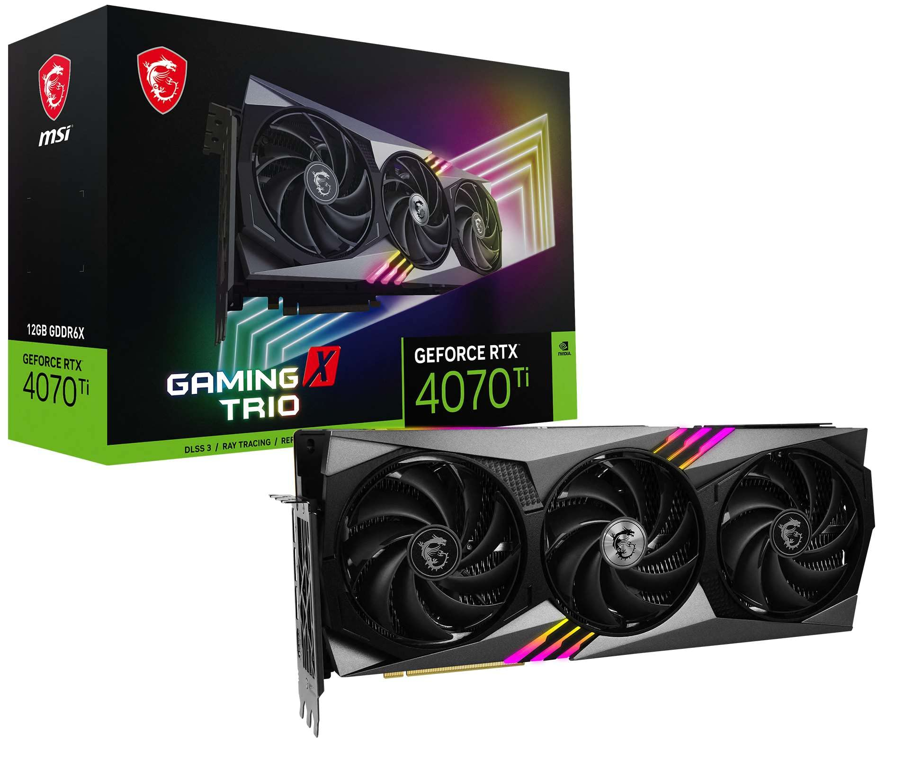
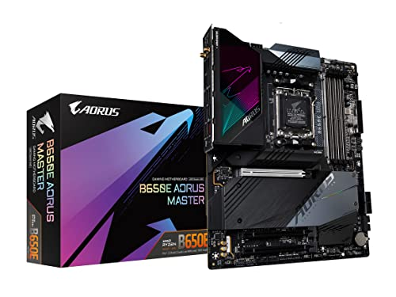
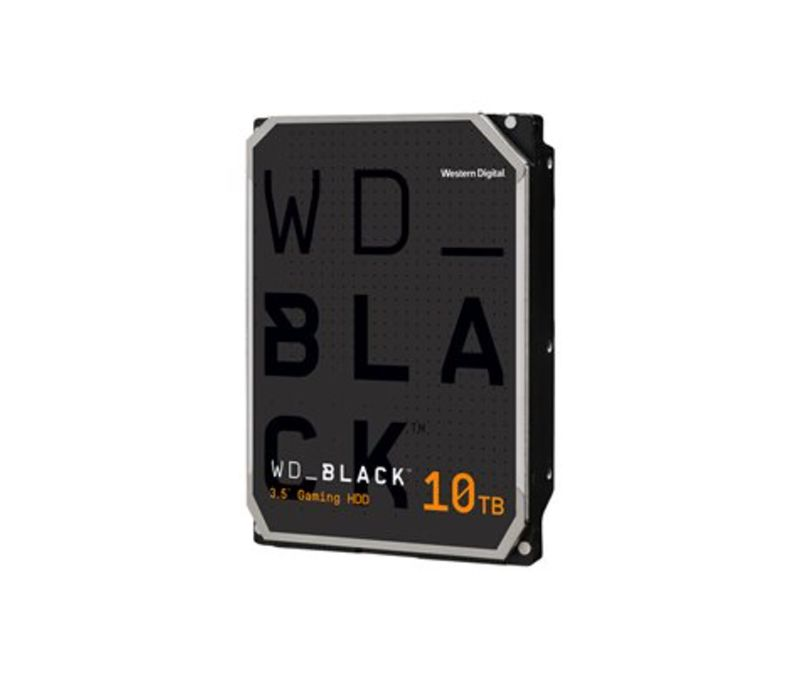

|
System Total = $2,052/$2,084
|
|  |
EV3A Mid-tower Case |
→ |
- Price: $137
-
This case isn't just good-looking; it's the Casanova of computer cases, the kind that has people dreaming of more than just sleek aesthetics.
With its charm, it makes most dream of having a significant other.
It's like the cupid of computer components, shooting arrows not only through USB ports but straight into your heart.
So, while you're gazing at this dreamy case, don't be surprised if you find yourself not just wishing for top-notch hardware but also for a top-notch girlfriend or boyfriend.
After all, when your case is this good-looking, love might just be in the air. Consider it the ultimate matchmaker in the world of PC romance
|
|  |
RYZEN 7 |
→ |
- Price: $167
-
This CPU isn't just the center of attention; it's the alpha in the digital jungle, establishing its territory like a tech-savvy lion.
It's not just processing data; it's processing dominance, and it might just steal your woman's heart with its computational charisma.
With power that can make your heart skip a beat faster than a high-speed download, this CPU isn't just a brain;
it's a heartthrob. So, if you want a processor that not only commands attention but might also give your love life a performance boost,
this CPU is the Romeo of the silicon realm. Just be warned, your woman might start sending love letters to your motherboard
|
 |
EV3A Geforce RTX
|
→ |
- Price: $179/$289
-
The cool of the crop, this cooling system is the maestro of temperature control,
playing both the air and water symphony.
It's the Swiss Army knife of coolers, effortlessly switching between air and water cooling like a tech magician.
Whether you're cruising the digital desert or diving into data oceans,
this cooling system keeps your rig cooler than an ice cream truck in December.
It's not just a cooler; it's a climate control wizard, ensuring your PC stays frosty in the heat of battle.
So, if you want the coolest experience in town, saddle up with this hybrid cooling powerhouse, because staying cool has never been this versatile
|
|  |
Geforce RTX 4070 |
→ |
- Price: $584
-
This graphics card has the power to make GigaChad's chiseled chin look even more legendary;
it's like a digital sculptor enhancing perfection. The optimal performance is so jaw-dropping that GigaChad himself would be envious.
This GPU doesn't just render graphics; it transforms GigaChad's charisma into pixels, making every frame a masterpiece.
So, if you want a graphics card that can make even GigaChad's chin look good enough for a digital red carpet,
this one's the golden ticket to visual excellence. Prepare for visuals so stunning, they'll make other GPUs blush.
|
|  |
B650e ADRUS Master |
→ |
- Price: $493
-
In a world full of mothers, there's only one that can handle the digital prowess of GigaChad.
This motherboard isn't just a caregiver; it's a tech-savvy matriarch, orchestrating the symphony of circuits with the finesse of a maestro.
It doesn't birth babies; it births seamless computing experiences.
When GigaChad needs a nurturing embrace, it turns to the one and only motherboard that can handle the gigabytes with maternal grace.
Because in the vast realm of motherboards, this one reigns supreme, ensuring GigaChad's digital existence is nothing short of legendary
|
 |
VegeanceRBG-PRO |
→ |
- Price: 157
-
This right here is the bad boy of RAM, the rebel without a latency cause.
It doesn't follow the rules; it rewrites them faster than a hacker on a caffeine high.
With speeds so wild, it makes other RAM modules blush.
It's not just memory; it's a digital renegade, rewriting code and breaking through barriers like a RAMbunctious outlaw.
So, if you want your computer to ride the lightning and break free from the mundane, this RAM is your ticket to the wild side.
It's the bad boy your motherboard warned you about, and oh boy, it's about to cause a data revolution
|
|  |
WD_Black 6GB
|
→ |
- Price: $362
-
This storage solution is so massive that even GigaChad,
the digital demigod himself,
won't need to think about hard drives for a solid two years.
We're talking storage for days, weeks, and Fortnite seasons.
It's the kind of capacity that makes even data hoarders nod in approval.
So, whether you're storing memes, cat videos, or your extensive collection of vintage keyboard sounds,
rest assured, this storage setup has got you covered. GigaChad may be legendary, but this storage?
It's the unsung hero in the epic saga of data domination.
|